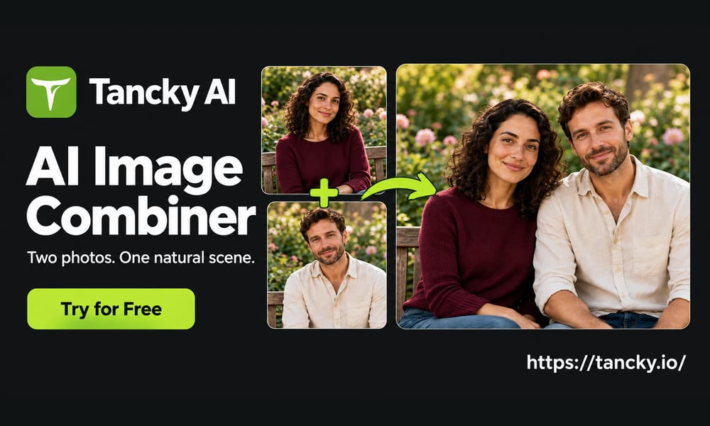
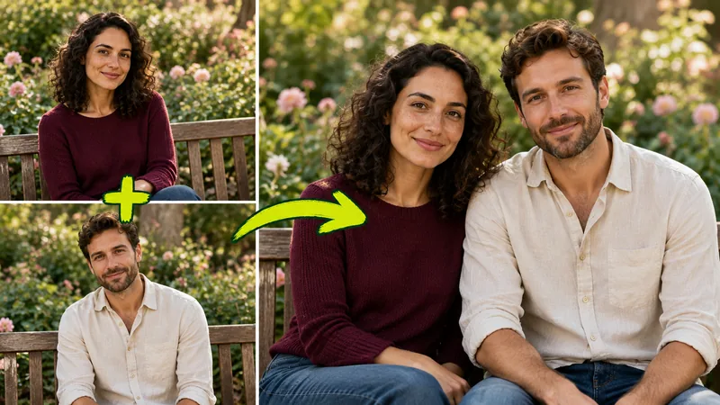
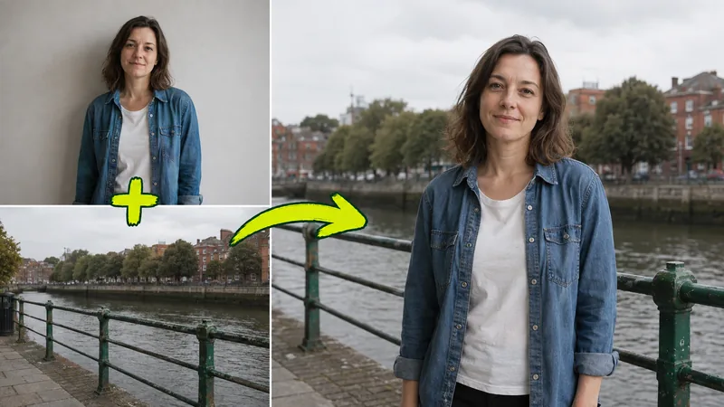
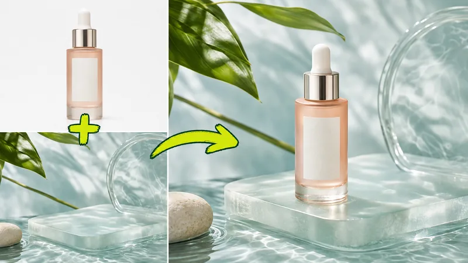
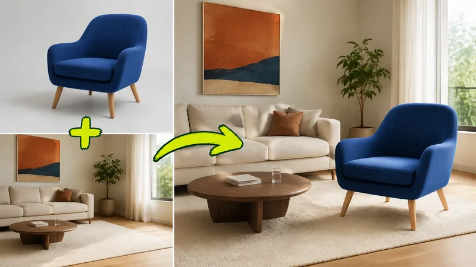
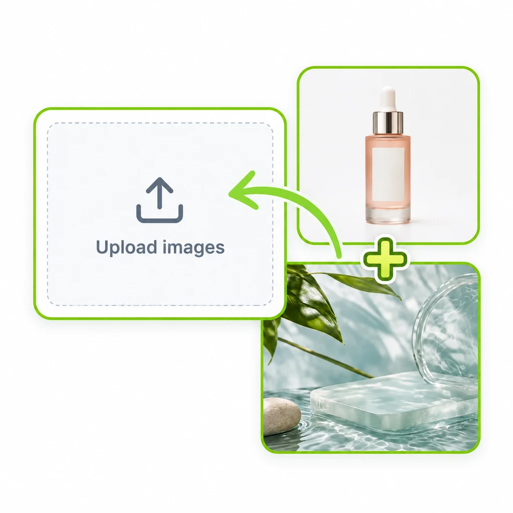
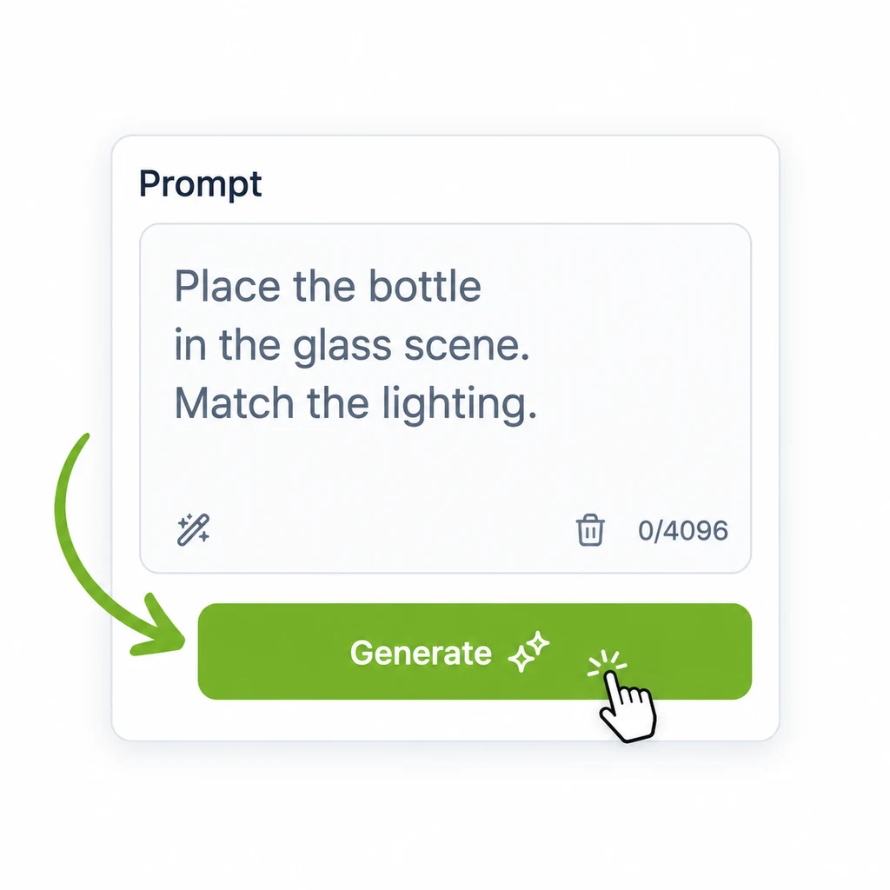
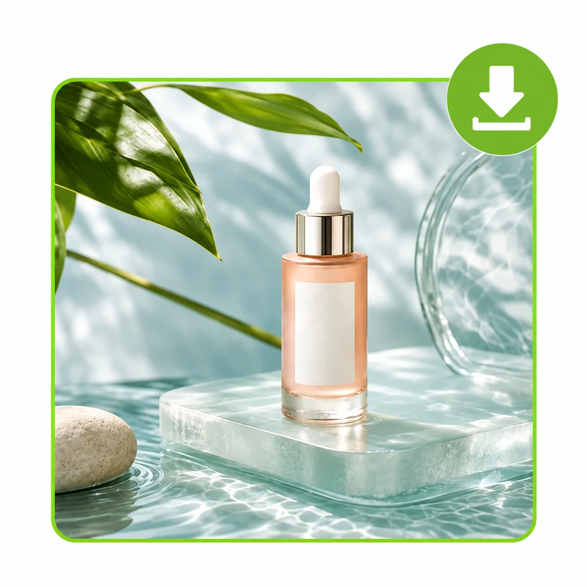

AI Image Combiner Prompt Guide
Most disappointing merges come from two things: mismatched source photos and vague prompts. This guide covers both, with templates you can paste straight into an AI image combiner.
The examples below were made with Tancky AI, a free online AI image combiner that accepts 2 to 4 reference photos and a text prompt.
Open the AI Image Combiner
Three ways to put photos together
Before writing a prompt, it helps to know what an AI image combiner does differently from the older options.
| Photo collage | Manual compositing | AI image combiner | |
|---|---|---|---|
| Result | Photos side by side in a grid | One scene, built layer by layer | One scene, rendered as a new photo |
| Lighting | Each photo keeps its own | Matched by hand | Matched automatically |
| Cutouts and masks | None needed | Pen tool, feathering, edge refinement | None needed |
| Skill required | Low | High | Low |
Source photo checklist
An AI image combiner can fix lighting. It cannot invent detail that was never in the photo. Check these before you upload:
- Sharp subject. No motion blur, with the face or product in clear focus.
- Similar camera height. An eye-level portrait sits naturally in an eye-level background. A top-down shot will not.
- Enough resolution. Small, heavily compressed images lose facial detail and label text.
- Uncovered subject. Hands, hair and product edges should not be cropped off or hidden.
- One clear background. Decide which photo supplies the setting and say so in the prompt.
- Supported format. JPG, PNG or WebP, between 2 and 4 images per merge.
Anatomy of a good prompt
A reliable prompt for an AI image combiner answers four questions in order:
- Which image is the scene? Name the background reference.
- What must stay unchanged? Faces, clothing, logos, furniture shape.
- Where does each subject go? Position, scale, and what sits in front of what.
- How should it be lit? Follow the light direction of the scene and add contact shadows.
Copy-ready prompt templates
Two people into one photo

Bring the two people from the reference photos together in one natural portrait. Use the garden bench from the first photo as the setting. Keep the face, hairstyle and clothing of each person exactly as shown. Seat them side by side at the same scale with a shared camera angle. Match the soft daylight and add natural shadows where they touch the bench.
Portrait onto a new background

Place the person from the portrait in the foreground of the riverside photo. Keep their facial features, hair, jacket and pose unchanged. Keep the railing, river and buildings in their original positions. Size the person to fit the perspective of the scene and match the overcast light on their skin and clothes.
Product into a lifestyle scene

Place the bottle upright on the glass platform in the scene image with its front label facing the camera. Preserve the exact bottle shape, dropper, glass color and label. Keep the leaves, water and stone where they are. Match the directional daylight of the scene and add a grounded contact shadow and a subtle reflection.
Furniture into a room

Place the armchair in the open floor area of the room photo, leaving a clear walkway. Preserve its shape, upholstery color and legs. Keep the walls, flooring, artwork and sofa unchanged. Scale it against the existing furniture and match the window light with a soft floor shadow.
Running a merge, step by step

Upload. Add 2 to 4 reference photos.

Describe. Paste a template and adjust it to your photos.

Generate. Choose an aspect ratio, review, download.
Troubleshooting
| Problem | Likely cause | Fix |
|---|---|---|
| A face looks slightly different | Low-resolution or soft source portrait | Use a sharper photo and ask to keep facial features exactly as shown |
| Subject looks too large or small | No scale reference in the prompt | Name an object to scale against, such as the sofa or the railing |
| Subject seems to float | Missing contact shadow | Ask for a grounded contact shadow on the surface it rests on |
| Background changed | Scene image not identified | State which photo is the background and that its layout must stay unchanged |
| Logo or label text is distorted | Label is small or angled in the source | Use a front-facing product photo and ask to preserve the label |
| Lighting feels flat | Sources lit from opposite sides | Tell the combiner to follow the light direction of the scene |
Good to know
- New accounts on Tancky AI get trial credits, so the AI image combiner can be tested for free.
- Credits are returned automatically when a generation is confirmed as failed.
- Finished images carry no watermark and can be used commercially.
Further reading
- How to combine two images with AI, the full walkthrough on the Tancky AI blog
- Project overview on GitHub